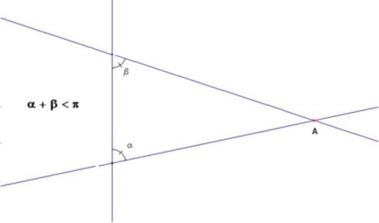
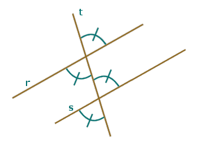

Postulati di Euclide
La geometria euclidea è un sistema matematico attribuito al matematico alessandrino Euclide, che la descrisse nei suoi Elementi.
I 5 postulati di Euclide sono:
Tra due punti qualsiasi è possibile tracciare una ed una sola retta;
A straight line segment can be drawn joining any two points.Si può prolungare un segmento oltre i due punti indefinitamente;
Any straight line segment can be extended indefinitely in a straight line.Dato un punto e una lunghezza, è possibile descrivere un cerchio;
Given any straight line segment, a circle can be drawn having the segment as radius and one endpoint as center.Tutti gli angoli retti sono congruenti tra loro;
All right angles are congruent.Se una retta che taglia altre due rette determina dallo stesso lato angoli interni minori di due angoli retti, prolungando le due rette, esse si incontreranno dalla parte dove i due angoli sono minori di due retti.
If two lines are drawn which intersect a third in such a way that the sum of the inner angles on one side is less than two right angles, then the two lines inevitably must intersect each other on that side if extended far enough. This postulate is equivalent to what is known as the parallel postulate.
Postulate IV can be read as an assumption about the homogeneity of space.
Non è un caso, probabilmente, che negli Elementi le proposizioni fino alla I,28 non fanno uso del postulato V, formando un corpus di teoremi che verrà poi chiamato geometria assoluta. Da questo corpus si devono però escludere le proposizioni dedotte dalla proposizione 16 (Un angolo esterno di un triangolo è maggiore di ciascuno dei due angoli interni non adiacenti), la cui dimostrazione pur non usando il V postulato, ricorre al II (prolungabilità indefinita di un segmento), che esclude le geometrie ellittiche.
A transversal is a line that intersects two (or more) other lines at distinct points; all of the lines lie in the same plane. In the following figure, c is a transversal for lines a and b. Angles that are formed between r and s are interior angles; those outside a and b are exterior angles.
Consideriamo due rette parallele r ed s e una terza retta t che le tagli. Si intuisce che gli angoli evidenziati in figura qui a fianco, chiamati angoli corrispondenti, devono essere uguali (o meglio congruenti cioè sovrapponibili): la retta t ha infatti la stessa inclinazione rispetto alle rette r ed s che sono parallele.

Da questa osservazione e dall'uguaglianza di angoli opposti al vertice segue l'uguaglianza dei quattro angoli acuti che si formano (vedi figura seguente).
